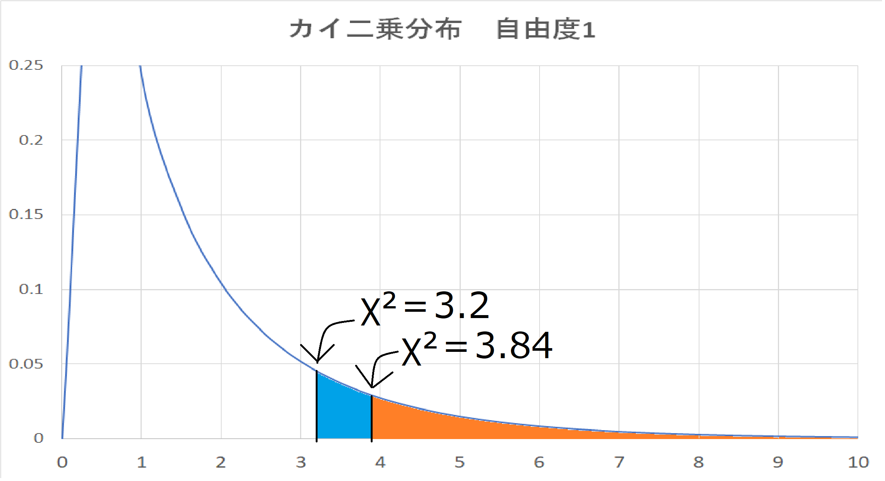

χ²検定とは何かが発生する頻度について偏りがあるかどうか調べる手法。
理論的に予想されるデータの分布と実際に観測されたデータの分布がほぼ同じかどうか検証する。
「予想通りの結果なのか？」あるいは「出来事に関連があるのか？」という2種類の検定がある。
・観測されたデータが予測される確率の通りになっているかどうか調べる→適合度の検定
・2つの出来事について、独立かどうか（関連性があるかどうか）を調べる→独立性の検定
χ²検定の結果から
p値とは、実際に観測された分布が理論的に予想される分布にどれだけ近づいているかを表す確率のこと。
p値が大きい→実際に観測された分布は理論的に予想される分布に近いことを示す。
p値が小さい→実際に観測された分布は理論的に予想される分布から離れていることを示す。
一般にこの値が5%未満（p ＜ 0.05）の場合にデータには「統計学的に有意な差がある」とされるため、p値が0.05 未満だと、実際に観測されたデータの分布は理論的に予想されるデータの分布から離れている と解釈する。
| p値 | 解釈 |
|---|---|
| p ＞ 0.05 | 分布に偏りあるいは関連があるとは言えない |
| p ＜ 0.05 | 分布に偏りあるいは関連があると言えそう |
χ²検定では、以下のステップを踏んで検定を行います。
1. データをクロス集計表にまとめる
2. 期待度数（もし関係がなかったら、きっとこうなるだろうという回数）を求める
3. データと期待度数との差を求める（この差が大きければ関係ありとみなせそう）
4. χ²値を求める
5. 有意水準で効果があるか判断する
これは、すでに集計できているという前提のもと進める。
以下のウェブサイトにおける、ボタンの色と押されやすさの関係を調べたデータを使う。
| 押した | 押さなかった | 合計 | |
|---|---|---|---|
| 青いボタン | 70 | 180 | 250 |
| 赤いボタン | 30 | 120 | 150 |
| 合計 | 100 | 300 | 400 |
次に「もし関係が無かったら、きっとこうなるだろうという回数」を求めます。これを期待度数
と呼ぶ。
この期待度数と、元のデータが大きく異なるというのであれば「関係ありそう」だとみなせそう。
期待度数の求め方を説明します。
まず、青いボタンに注目します。青いボタンを目にした人の数は「250人」です。
次に「ボタンの色に関わらない、ボタンを押した人の割合」を見ます。全体400人のうち、100人
がボタンを押している。
だから「もしもボタンの色と押されやすさに関係がないとしたら、4分の1の割合でボタンが押される」
ということになる。
というわけで、「もしもボタンの色と押されやすさに関係がないとしたら、青いボタンを押す人の数は
250÷4=62.5人になるだろう」と計算できます。
この62.5人が期待度数となります。
赤いボタンも同様に考えると、150人のうちの4分の1がボタンを押すので、「37.人」となります。
「（ボタンの色を無視して）ボタンを押さなかった人の割合」は4分の3になる。
つまり、青いボタンを押さなかった人は「250×(3/4)=187.5人」
同様に、赤いボタンを押さなかった人は「150×(3/4)=112.5人」となります。
これを表にまとめると以下の表になります。
| 押した | 押さなかった | 合計 | |
|---|---|---|---|
| 青いボタン | 62.5 | 187.5 | 250 |
| 赤いボタン | 37.5 | 112.5 | 150 |
| 合計 | 100 | 300 | 400 |
元データと期待度数の違いを、以下の式を使って計算します。
(元データ-期待度数)²÷期待度数
例えば青いボタンを押した人の数はこうなっていました。
元データ：70人
期待度数：62.5人
よって以下のように計算できます。
(70-62.5)²÷62.5=0.9
これを他のものも計算したら、以下の表になります。
| 押した | 押さなかった | |
|---|---|---|
| 青いボタン | 0.9 | 0.3 |
| 赤いボタン | 1.5 | 0.5 |
χ²は、単に先程計算した表の中身を足し合わせるだけで計算できます。
0.9＋0.3＋1.5＋0.5＝3.2
有意水準で関係があるか判断する場合は、有意水準〇%で判断するかを決める。今回は有意水準5%
で検定してみます。
上の画像からχ²分布の上側1000.05パーセント点χ²1(0.05)が3.84だとわかります。
この数値3.84と先程出したχ²値3.2を比べてみると、以下の画像のようになります。
よってχ²値3.2は有意水準（5%）では、関係がないと言える。
トップページへ